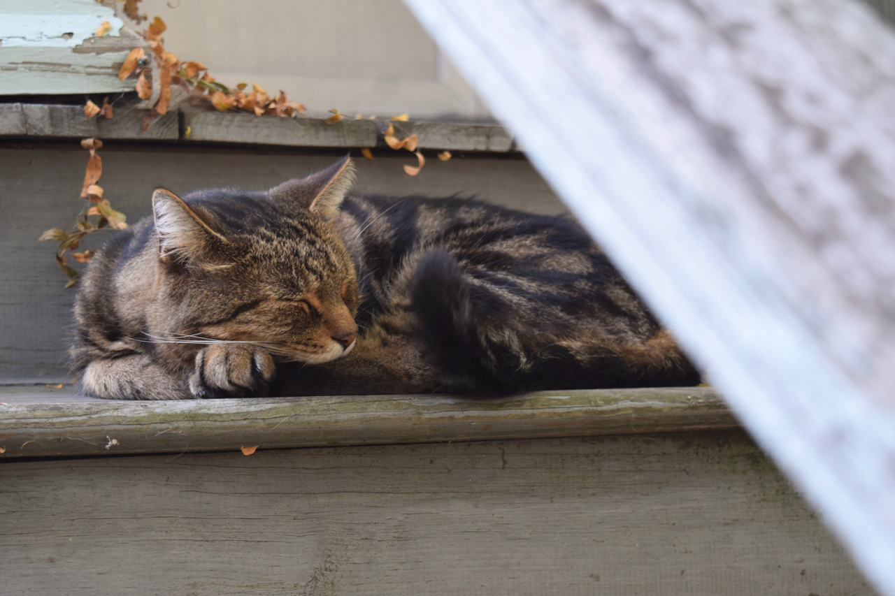
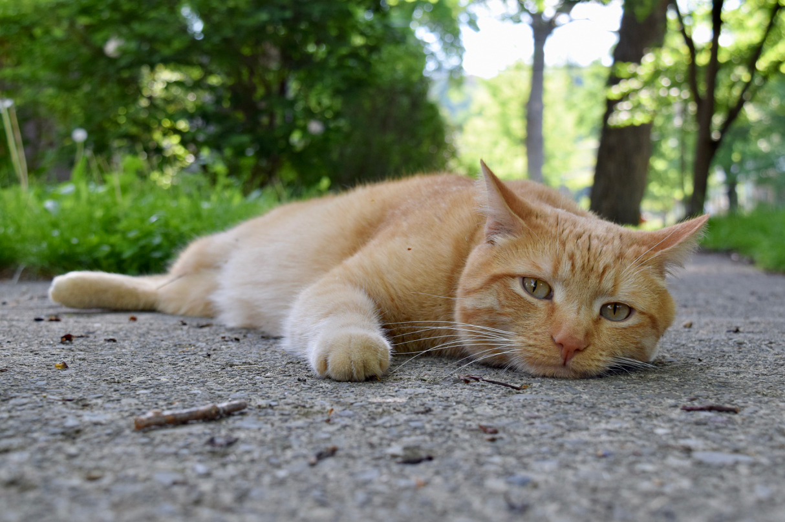
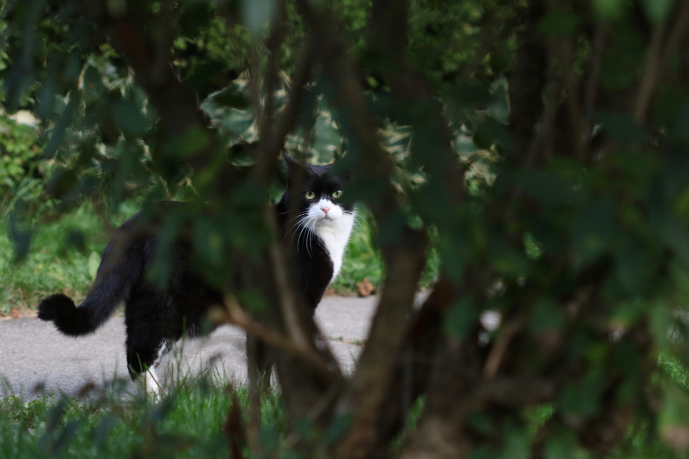
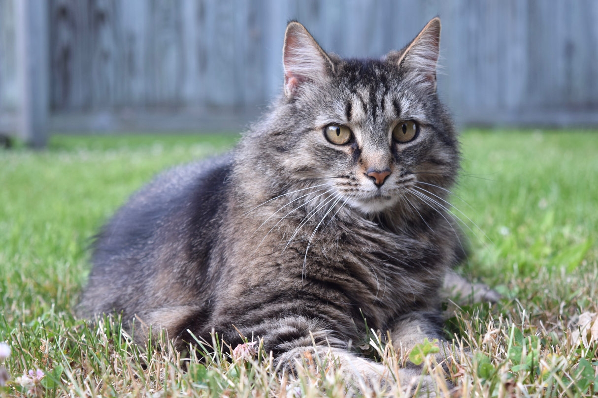

Hi, & welcome to the website for Cats of Fall Creek!
After walking around taking cat photos for months, we've made a new calendar for 2021!
In the process, we've enjoyed meeting and chatting with many of the cat owners around the neighborhood.
This year's calendar has sixteen (16(!)) cats in it, some of which are the nicest/cutest/fluffiest cats we've ever met.
It also features the photo contest winners—we're excited to share them with you!
The 2021 calendar is being printed! To order a calendar ($13 each), please click this button:
We have about ten calendars left unclaimed—please order now if you want one!
We'll be coordinating local contactless outdoor pickup/delivery in Ithaca in mid-December 2020.
In the meantime, check out some of the cats!




—— 2020 calendar ——
Our 2020 calendar was a big success—we donated $336 to the SPCA of Tompkins County!
Thanks to all who picked one up!
Last year's calendar featured these incredible Fall Creek Cats, among many others: